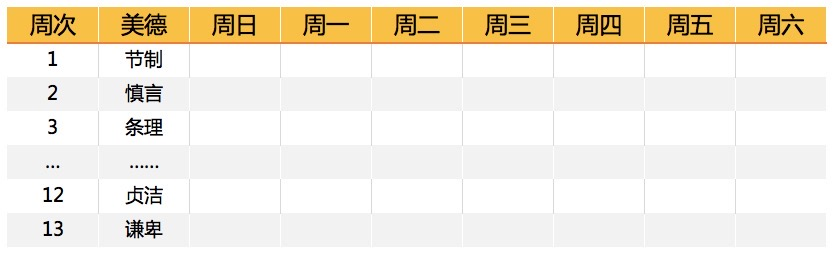

美德
- 节制：食不可饱，酒不过量。
- 慎言：只讲对人对己有益之言，不说无聊琐碎的话。
- 条理：让拥有的每件东西都各有其位，让要做的每件事情都各有其时。
- 坚毅：一旦决定做一件事，就马上义无反顾地去做。
- 节俭：将钱用在于人于己有益的事情上，杜绝浪费。
- 勤奋：不耽误任何时间，总是在干有用的事情，终止不必要的行为。
- 真诚：不采用任何有害的欺骗行为，想问题和说话都要公平公正。
- 正直：绝不做损人利己之事。
- 适度：避免极端，避免别人对你产生怨恨。
- 清洁：决不允许身体、服装和居所不洁。
- 心静：不为琐碎之事，寻常之事，和不可避免之事萦绕。
- 贞洁：不过度行房事，也不因男女关系损害和他人的关系。
- 谦卑：以耶稣和苏格拉底为楷模。
这么多美德一下子养成肯定很难，如果想要一步到位地做到，肯定是适得其反，因此富兰克林决定一星期只注重培养其中的一项，这样13周为一个周期，一年四个周期。
怎么能保证每天在行为上做到这些要求呢？富兰克林做了这样一个表格：

每一周他只关注一种美德的培养，如果哪一天没做好，他就在表中涂一个黑点，每13周（大致一个季度）为一个循环。当时纸张还很贵，因此富兰克林在每个季度后就擦干净前面涂抹的黑点，重新利用这张表。